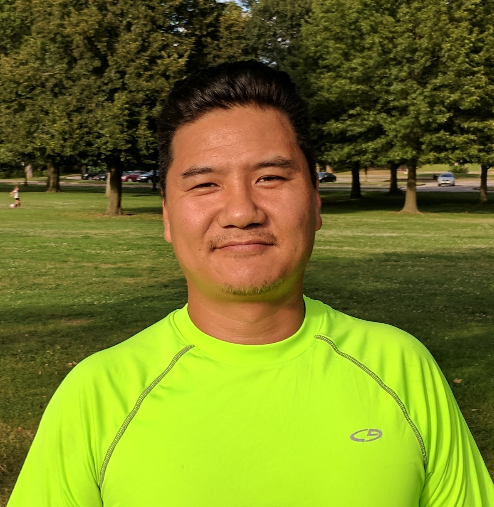
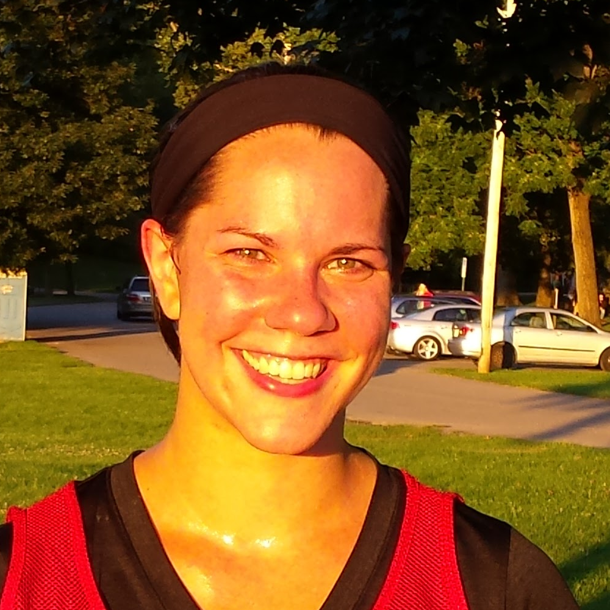

17
Alex Merkert
President and Founder
Alex invented Chadminton all the way back in 2004.
It's true that there is a fine line between genius and madness.
For over a decade, Alex has seen many a Chadminton player come and go,
but he's stuck to the task of spreading the good word of Chadminton far and wide.
19
Kevin "Big Tuna" Ottke
Director of Marketing and Social Media
Kevin has only been playing Chadminton for a few years, but he's already developed a deep appreciation for the sport.
He started out as a goalkeeper, where he pioneered the use of the pillow at that position.
Recently, he's become a more offensive player, using his height and length to keep defenders at bay.
Tuna also manages much of Chadminton's online presence - you could say he's really good at the Twitters.
Big Tuna is originally from Cincinnati, where he grew up and went to UC before moving to Columbus in early 2017.
13
Chris "Specs" McGlamery
Vice President of Equipment
Specs is a long time Chadminton player who has a reputation as an enforcer with a pillow.
He can be identified by his 'rec-specs', without which we assume he would be absolutely blind.
He's also behind many Chadminton innovations, such as the game jerseys and scoreboard.
4
Chris Zuccarelli
Chris came to chadminton by way of his brother Anthony, who served as the president of the Chadminton Club at Ohio State.
Chris is generally more comfortable in a long distance race of some kind, and he's a gifted endurance athlete.
In other words, when everyone else is sucking wind like crazy, he's the one person not out of breath.
10
Coady DiRutigliano
Coady is a multi-sport athlete, dabbling in everything from soccer to running to ultimate.
It's these varied experiences that give him an edge on the Chadminton ladder.
Coady is the most enthusiastic and positive person you will ever meet in your life,
and he bring that energy to Chadminton in a way that is incredibly contagious.
If you don't have fun playing Chadminton with Coady, you might not have a pulse.
28
Sarah K. Douglas, PhD
Statistician and Chief Historian
Sarah D comes from a background in both lacrosse and field hockey, so when it comes to Chadminton,
she's a natural. Although she isn't often keen on taking the field herself, she can be found on the sidelines
diligently recording every statistic so that each game may live on in the annals of Chadminton history.

2
Peter Schneck
Peter is an absolute beast on the ladder, and plays with a level of aggression that let's you
know he means business. You'd be surprised to learn that he is deaf, because he always seems to know exactly
where his teammates are on the field.
73
Eli Loughridge
Columbus Sports & Social Head Organizer
Eli is the ultimate team player - 100% committed to everything he does and the friendliest person
you will ever meet! Eli runs our parent group, but he's never too busy to pick up a scoop or a pillow and play some Chadminton.
Not only is he a skilled goalie and chad, he is very active in helping to grow and promote the sport as well!
88
Kevin DeFoor
Kevin D4 had been hearing about Chadminton for years, but like many others before him, he wrote it off as something stupid.
When he was finally presented with a scoop donning the logo of his beloved alma mater
Bowling Green State University, he finally relented and decided to join a game.
Needless to say, it didn't take long for him to gain appreciation for everything Chadminton is.
#
Nick DiRutigliano
Nick is quiet and contemplative off the field, but during a game of Chadminton, he's a fierce and tough competitor.
His long history with many sports is obvious, and his athleticism gives him an advantage that's hard to ignore.
Nick continues the long tradition of little brothers exceeding the skill of the older siblings that brought them to
Chadminton in the first place. Those little jerks.

#
Mary Beth Cole
Mary Beth has been playing Chadminton just a short time - she found us by way of Meetup in the summer of 2017.
Originally from Maryland, Mary Beth is currently a PhD candidate at the Ohio State University.
On the field she's a fierce competitor - she plays sweeper and frequently ends up in scrums.
When she's not playing Chadminton, she is focused on her dissertation, fixing microscopes, or playing other sports.
Next time you see Mary Beth, buy her a Mint Chocolate Chip ice cream cone and ask her about the Silver Leaf Langur.
#
Mike Mueller
Mike found Chadminton on Meetup and has been playing since May of 2017. Mike is especially adept at offense,
and even once scored all 5 of his team's goals in a game!
Outside of Chadminton, Mike is a bit of a gear head and you can find him cruising around in his '86 Honda.